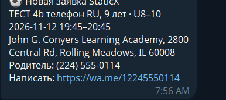

Повідомлення о 23:00 без відповіді
Клієнт пише ввечері, ви відповідаєте зранку, а він уже записався в іншого.
Бот відповідає одразу і пропонує вільний час.
Сайт із записом або Telegram-бот для салону, школи, студії. Запуск за 5 днів, ціни відкриті.
StaticX, Чикаго: запуск за 5 днів. 5 із 5 тестових заявок дійшли. 2 мови.
Працюємо тільки через офіційні API Telegram і Meta.
Клієнт пише ввечері, ви відповідаєте зранку, а він уже записався в іншого.
Бот відповідає одразу і пропонує вільний час.
Руки зайняті, телефон дзвонить. Клієнт не передзвонює.
Заявка з сайту чи бота одразу лягає вам у Telegram.
Запис був, а місце в графіку порожнє.
Бот нагадує про візит за день.
від 8 000 грн
5 днів після відповідей на бриф
1 800 грн + 500 грн/міс
+3 дні до запуску
Система «не втрачаємо клієнтів»: відповідь за хвилину, усі заявки в одній таблиці, ранкове зведення вам. За запитом, 2 тижні. Аванс 50 %. Токени ШІ — на рахунок клієнта.
Розробка з нуля під один бізнес, більша команда, довший запуск. Це виправдано, коли у вас складні процеси.
Готовий конструктор зі своїми обмеженнями. Налаштування і підтримка часто лишаються на вас.
Сайт із записом — від 8 000 грн. Бот запису — 1 800 грн і 500 грн на місяць. Ми беремо готову основу й налаштовуємо її під ваш прайс і графік, тому ви не платите за розробку з нуля. Точну суму називаємо одним числом після брифу. Токени ШІ оплачуєте окремо, на свій рахунок.
StaticX Soccer Academy потрібен був сайт, де батьки записують дітей на пробне тренування. Ми зробили сайт на двох мовах із формою запису. Заявка одразу приходить у Telegram і лягає в таблицю. Домен і Google Search Console підключені, з 5 тестових заявок дійшли всі 5.

20 хвилин розмови. Ви отримуєте ціну одним числом і вносите аванс 50 %.
За 2–3 дні показуємо чернетку. Є 2 кола правок.
Підключаємо домен, надсилаємо 5 тестових заявок, віддаємо пам'ятку власнику. Після здачі правки — за домовленістю.
Бот не замінює людину. Він забирає повторювану роботу.
Є адміністратор? Бот забере в нього нічні повідомлення й типові питання. Немає? Бот відповідатиме, поки ви з клієнтом.
Усі пишуть удень, і ви встигаєте відповісти.
Бот вам зайвий. Вистачить телефона або простого сайту.
У Telegram вам майже ніхто не пише.
Бот не відповідає на дзвінки. Сайт із формою дасть клієнтам інший спосіб записатися.
Наш бот зараз працює в Telegram.
Бот у Direct запрацює після дозволу Meta. До того краще почати із сайту.
Клієнт має заплатити ще до візиту.
Бот не приймає оплату. Цю частину доведеться робити вам.
Сайт із записом — від 8 000 грн. Бот запису — 1 800 грн і 500 грн на місяць. Ціну одним числом ви отримуєте після брифу. Аванс — 50 %. Токени ШІ оплачуєте окремо, на свій рахунок.
Сайт — 5 днів після того, як ви відповіли на бриф. Бот — ще +3 дні. Instagram Direct запрацює після дозволу Meta.
Якщо у вас салон, школа, студія чи інший сервіс із записом, так. Напишіть, чим займаєтесь, і ми чесно скажемо, чи потрібен вам сайт, бот або нічого з цього.
Перед здачею ми надсилаємо 5 тестових заявок з телефона й комп'ютера. Чернетку правимо у 2 кола, після здачі — ще 2 тижні.
Заявки приходять вам у Telegram і в таблицю. Ви отримуєте пам'ятку: де заявки і як змінити тексти. Правки — 2 тижні після здачі, далі за домовленістю. Бот — 500 грн/міс.
Сайт знаходять у Google, а запис на ньому не губиться в переписці. Instagram приводить людей, сайт збирає заявки. Бот у Direct запрацює після дозволу Meta.
Вам у Telegram одразу і в таблицю з усіма заявками. Усе працює без вашого ноутбука: на хостингу, а не на нашому комп'ютері.
Перші 2 тижні — ми, у ціні. Далі за домовленістю. Пам'ятка власнику пояснює, як змінити тексти самому.
Напишіть, чим займаєтесь. Ми зробимо приклад для вашого бізнесу.
Напишемо вам у вказаному каналі. А поки спробуйте демо-бота: https://t.me/barbershopdemotestbot?start=site
Спробуйте ще раз або напишіть нам у Telegram @paty_1l.